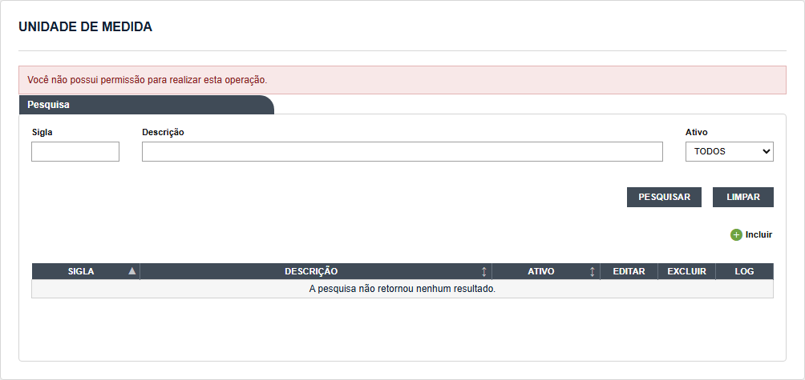
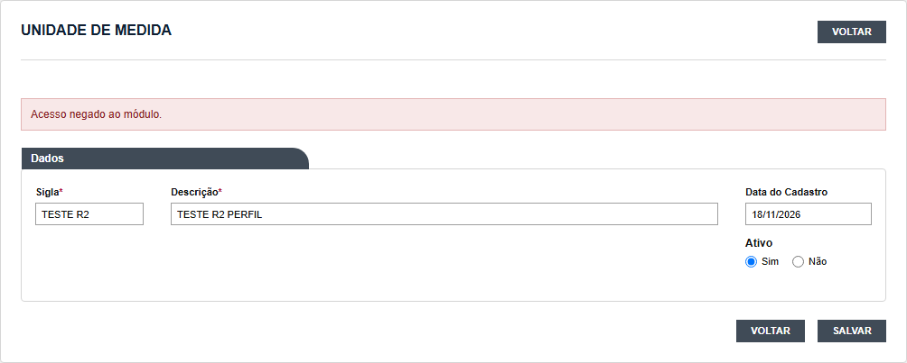
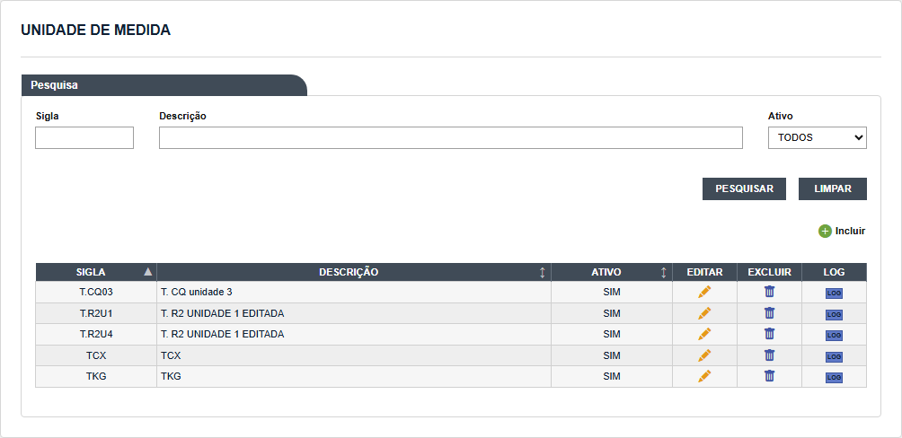
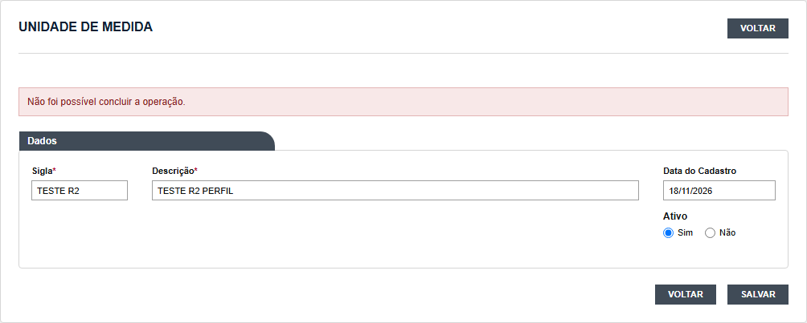
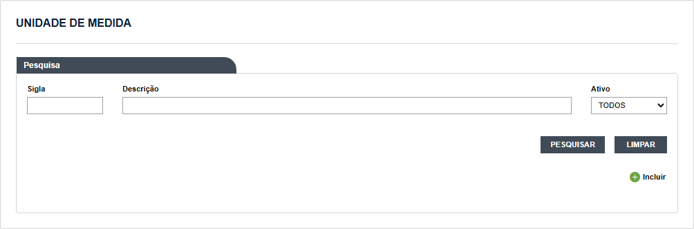
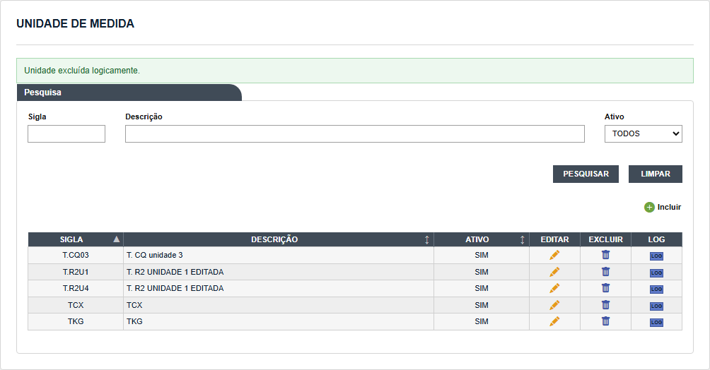

O que acontece ao confirmar ou salvar
- Incluir: grava a unidade (API 201), registra "Inclusão" no histórico e volta à pesquisa, sem aviso.
- Alterar: exige justificativa, grava (API 204) e guarda no histórico o campo alterado e a justificativa.
- Excluir: exige justificativa (o SIM só fica habilitado com ela) e remove a unidade da lista (API 204), com a faixa verde "Unidade excluída logicamente.". Se a unidade estiver em uso numa regra, o servidor recusa (ver abaixo).
- Unidade em uso: a exclusão da unidade T.CQ03, usada em Regra Amostragem e em Regra de Análise, foi recusada nos dois casos, com a faixa vermelha "Exclusão inválida, existem referências com outras tabelas.".
O que o sistema recusa
| Situação | Mensagem exata | Observação |
|---|---|---|
| Salvar vazio | "Preencha os campos obrigatórios." | Faixa rosa no alto |
| Alterar sem justificativa | "Preencha os campos obrigatórios." | Faixa rosa; a justificativa é obrigatória na edição |
| Sigla repetida | "Sigla já está cadastrada para outro registro!" (API 409) | Igual ao legado |
| Excluir sem justificativa | Nenhuma mensagem: o botão SIM fica esmaecido e desabilitado | A justificativa é obrigatória (Melhoria sobre o legado) |
| Excluir unidade em uso em regra de amostragem ou de análise | "Exclusão inválida, existem referências com outras tabelas." (API 409) | A faixa vermelha aparece no alto, mas a caixa de confirmação continua aberta por cima e cobre parte do texto; só depois de NÃO a mensagem fica legível |
Campos da tela
| Campo | Tipo | Tamanho | Obrigatório | Valores e regra | Observação |
|---|---|---|---|---|---|
| Filtro Sigla | Texto | — | Não | Procura parte da sigla, sem diferenciar maiúsculas | Conferido em 17/11/2026 |
| Filtro Descrição | Texto | — | Não | Procura parte da descrição, sem diferenciar maiúsculas | Conferido em 17/11/2026 |
| Filtro Ativo | Lista | — | Não | TODOS, SIM, NÃO | |
| Sigla | Texto | até 8 caracteres (a digitação para no 8º; igual ao legado) | Sim | Não pode repetir | Pode ser alterada na edição, sem aviso (Ponto para validar com a área) |
| Descrição | Texto | até 50 (igual ao legado) | Sim | Não é conferida contra repetição (igual ao legado, conferido em 17/11/2026) | |
| Data do Cadastro | Data | — | — | Data do dia; somente leitura (igual ao legado) | Parece editável visualmente, mas não aceita digitação |
| Ativo | Duas opções | — | Não | Abre com Sim | |
| Justificativa | Texto | até 500 (diferente do legado, que aceitava 499) | Só na alteração e na exclusão | Escondido na inclusão | Exclusão agora exige (Melhoria) |
Quem pode usar (permissões)
- Contas usadas nos testes: a rodada 1 e a conferência de 17/11/2026 usaram a conta de administrador de teste, que abre e usa todas as funções da tela. Em 18/11/2026 a rodada de perfil restrito acrescentou duas contas de teste, uma sem acesso ao CQ e outra só de consulta (abaixo). Não há quadro de quem pode (
quem-pode.csv) para o CQ novo. - Perfil sem acesso ao CQ (conta T.R2CQ01, perfil T. R2 CQ SEM ACESSO, nenhuma função do CQ; 18/11/2026): O menu não mostra nenhum item do CQ. Pela rota a tela abre inteira com o botão Incluir visível; a lista vem vazia com a faixa "Você não possui permissão para realizar esta operação." e, abaixo, "A pesquisa não retornou nenhum resultado." (DV-CQ-N-030). Ao incluir, o formulário abre normalmente e, depois de SALVAR, a faixa diz "Acesso negado ao módulo." (outro texto, DV-CQ-N-031). A API recusa tudo com 403 ("Acesso negado ao módulo."): lista, POST, PUT, DELETE e histórico; o relatório responde 404 (a tela não tem rota de relatório). Depois de recarregar a página (F5), o cabeçalho passa a PRINCIPAL, porque esta conta só tem esse módulo (não é a DV-CQ-N-007).
- Perfil de consulta (conta T.R2CQ02, perfil T. R2 CQ CONSULTA: tela marcada com CONSULTAR LOG e IMPRIMIR / EXCEL, sem INCLUIR, ALTERAR e EXCLUIR; 18/11/2026): O menu do CQ mostra a tela. Ela abre e lista (5 linhas), com Incluir, Editar, Excluir e histórico ativos (DV-CQ-N-032). A recusa só vem depois de preencher e SALVAR, e o texto é "Não foi possível concluir a operação.", sem dizer que o motivo é a falta de permissão (DV-CQ-N-031); o mesmo texto aparece ao alterar. Ao excluir, a tela pede antes "Confirma a exclusão da unidade selecionada?" com a justificativa obrigatória e só depois do SIM o servidor recusa (403): a faixa mostra "Você não possui permissão para realizar esta operação.". Pela API: leitura 200, histórico 200; POST, PUT e DELETE recusados com 403; sem rota de relatório (404). Depois de recarregar a página (F5), o cabeçalho continuou CONTROLE DA QUALIDADE: a DV-CQ-N-007 não se reproduziu com esta conta.
- Conta com permissão só nesta tela (T.R2CQ03, perfil T. R2 CQ UMA TELA: Incluir, Alterar e Excluir só em Unidade de Medida, mais Grau de Contaminação; 18/11/2026): usa a tela normalmente: a lista carrega (GET 200), Incluir grava (POST 201), Alterar grava (PUT 204, pede a Justificativa) e Excluir grava (DELETE 204, "Unidade excluída logicamente."). É a conta de comparação com a Verificação de Amostragens (DV-CQ-N-035) e com as quatro telas sem função (DV-CQ-N-033).
- Ler ou gravar sem login ou com token inválido é recusado (401), melhoria sobre o legado.
- No legado, quem só consultava incluía e excluía unidades (DV-CQ-015, Média). (do legado) Na versão nova, testado em 18/11/2026: o servidor recusa a gravação sem a função (403), melhoria sobre o legado; a interface, porém, continua mostrando os botões e a recusa tem texto variado (DV-CQ-N-031, DV-CQ-N-032).

A imagem mostra a tela de Unidade de Medida com a conta sem acesso: faixa de recusa, o botão Incluir visível e a lista vazia com "A pesquisa não retornou nenhum resultado.".

A imagem mostra o formulário preenchido e, depois de SALVAR, a faixa "Acesso negado ao módulo.".

A imagem mostra a tela depois de recarregar a página, com a conta sem acesso (o cabeçalho PRINCIPAL não aparece no recorte, que mostra só a área de conteúdo).

A imagem mostra a lista com 5 linhas e os ícones de editar, excluir e histórico ativos, e o botão Incluir.

A imagem mostra o formulário preenchido e, depois de SALVAR, a faixa "Não foi possível concluir a operação.".

A imagem mostra a alteração com a justificativa preenchida e, depois de SALVAR, a faixa "Não foi possível concluir a operação.".

A imagem mostra a pergunta "Confirma a exclusão da unidade selecionada?" com a justificativa preenchida; ao fundo, a faixa de recusa que o servidor devolve depois do SIM.
A imagem mostra a tela depois de recarregar a página com a conta de consulta: continua a tela do CQ.

A imagem mostra a conta T.R2CQ03 depois de SALVAR: a tela volta aos filtros, sem mensagem de sucesso; a criação está confirmada pelo servidor (POST 201).

A imagem mostra a tela depois de salvar a alteração com a justificativa: volta aos filtros, sem mensagem; o servidor aceitou (PUT 204).

A imagem mostra a faixa verde "Unidade excluída logicamente." e a lista sem a unidade de teste.